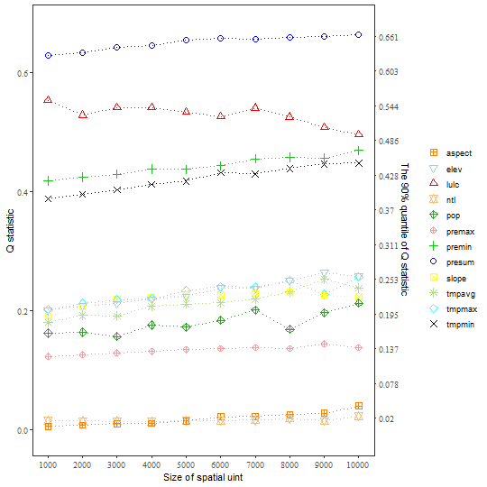
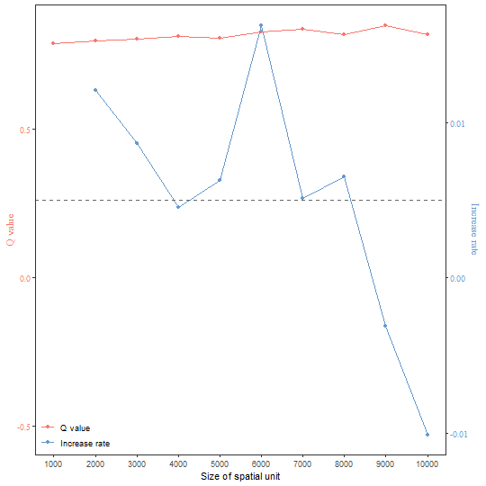
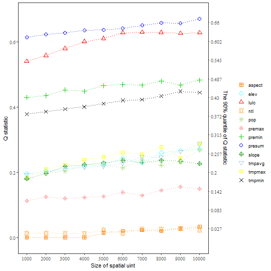

gdverse provides the sesu_opgd() and
sesu_gozh() function to support the selection of optimal
spatial analysis scales which based on OPGD and
GOZH respectively. Please refer to the help
documentation of the corresponding function for more details.
Here, we use FVC raster data as an example to demonstrate the optimal spatial analysis scale selection function in gdverse.
Processing data
First, we construct FVC data under different spatial units using the original data.
library(terra)
library(tidyverse)
library(gdverse)
fvcpath = "https://github.com/SpatLyu/rdevdata/raw/main/FVC.tif"
fvc = terra::rast(paste0("/vsicurl/",fvcpath))
fvc
## class : SpatRaster
## dimensions : 418, 568, 13 (nrow, ncol, nlyr)
## resolution : 1000, 1000 (x, y)
## extent : -92742.16, 475257.8, 3591385, 4009385 (xmin, xmax, ymin, ymax)
## coord. ref. : Asia_North_Albers_Equal_Area_Conic
## source : FVC.tif
## names : fvc, premax, premin, presum, tmpmax, tmpmin, ...
## min values : 0.1363270, 109.8619, 2.00000, 3783.904, 9.289694, -11.971293, ...
## max values : 0.9596695, 249.9284, 82.74928, 8549.112, 26.781870, 1.322163, ...The original data resolution is 1000m, and then we
construct the data under 2000-10000 m spatial units with
1000 spatial unit interval.
su = seq(1000,10000,by = 1000)
fvc1000 = tibble::as_tibble(terra::as.data.frame(fvc,na.rm = T))
fvc_other = 2:10 %>%
purrr::map(\(.x) terra::aggregate(fvc,fact=.x ,fun="mean") %>%
terra::as.data.frame(na.rm = T) %>%
tibble::as_tibble())
fvc = c(list(fvc1000),fvc_other)
str(fvc)
## List of 10
## $ : tibble [136,243 × 13] (S3: tbl_df/tbl/data.frame)
## ..$ fvc : num [1:136243] 0.198 0.193 0.192 0.189 0.208 ...
## ..$ premax: num [1:136243] 163 161 160 159 164 ...
## ..$ premin: num [1:136243] 7.95 6.8 5.24 5 9.98 ...
## ..$ presum: num [1:136243] 3956 3892 3842 3808 4051 ...
## ..$ tmpmax: num [1:136243] 20.8 20.7 20.9 21.1 20.6 ...
## ..$ tmpmin: num [1:136243] -7.53 -7.55 -7.48 -7.39 -7.59 ...
## ..$ tmpavg: num [1:136243] 8.05 8.02 8.15 8.35 7.97 ...
## ..$ pop : num [1:136243] 1.903 1.203 0.547 0.542 10.392 ...
## ..$ ntl : num [1:136243] 6.6 4.91 3.75 3.99 7.1 ...
## ..$ lulc : num [1:136243] 10 10 10 10 10 10 10 10 10 10 ...
## ..$ elev : num [1:136243] 1758 1754 1722 1672 1780 ...
## ..$ slope : num [1:136243] 2.65 3.45 3.96 2.9 1.94 ...
## ..$ aspect: num [1:136243] 176.4 169.6 138.5 110.9 99.5 ...
## $ : tibble [33,722 × 13] (S3: tbl_df/tbl/data.frame)
## ..$ fvc : num [1:33722] 0.195 0.184 0.157 0.204 0.208 ...
## ..$ premax: num [1:33722] 162 159 167 165 165 ...
## ..$ premin: num [1:33722] 7.37 5.14 4.21 10.98 9.8 ...
## ..$ presum: num [1:33722] 3935 3799 3975 4134 4089 ...
## ..$ tmpmax: num [1:33722] 20.9 21.3 21.1 20.4 20.9 ...
## ..$ tmpmin: num [1:33722] -7.39 -7.21 -7.3 -7.62 -7.33 ...
## ..$ tmpavg: num [1:33722] 8.17 8.5 8.49 7.78 8.2 ...
## ..$ pop : num [1:33722] 18.69 0.91 8.94 10.31 6.46 ...
## ..$ ntl : num [1:33722] 6.15 4.32 2.14 4.64 6.79 ...
## ..$ lulc : num [1:33722] 10 10 10 10 10 10 10 10 10 10 ...
## ..$ elev : num [1:33722] 1720 1638 1662 1835 1717 ...
## ..$ slope : num [1:33722] 3.89 2.63 3.06 3.37 3.93 ...
## ..$ aspect: num [1:33722] 114 158 136 102 120 ...
## $ : tibble [14,840 × 13] (S3: tbl_df/tbl/data.frame)
## ..$ fvc : num [1:14840] 0.205 0.197 0.175 0.163 0.21 ...
## ..$ premax: num [1:14840] 165 161 160 162 165 ...
## ..$ premin: num [1:14840] 10.35 6.02 4.97 4.48 11.04 ...
## ..$ presum: num [1:14840] 4098 3908 3848 3910 4131 ...
## ..$ tmpmax: num [1:14840] 20.7 21.2 21.5 21.3 20.4 ...
## ..$ tmpmin: num [1:14840] -7.46 -7.19 -7.07 -7.24 -7.52 ...
## ..$ tmpavg: num [1:14840] 8.04 8.44 8.67 8.52 7.84 ...
## ..$ pop : num [1:14840] 12.33 13.78 4.59 6.52 2.97 ...
## ..$ ntl : num [1:14840] 6.37 7.79 7.23 9.96 4.59 ...
## ..$ lulc : num [1:14840] 10 10 10 10 10 10 10 10 10 10 ...
## ..$ elev : num [1:14840] 1762 1654 1600 1649 1805 ...
## ..$ slope : num [1:14840] 3.41 3.19 2.61 3.06 3.76 ...
## ..$ aspect: num [1:14840] 126 130 179 201 146 ...
## $ : tibble [8,268 × 13] (S3: tbl_df/tbl/data.frame)
## ..$ fvc : num [1:8268] 0.2 0.174 0.175 0.182 0.193 ...
## ..$ premax: num [1:8268] 164 161 165 171 164 ...
## ..$ premin: num [1:8268] 7.57 5.37 6.07 5.78 9.32 ...
## ..$ presum: num [1:8268] 4022 3896 4026 4177 4072 ...
## ..$ tmpmax: num [1:8268] 21 21.6 21.3 20.8 21 ...
## ..$ tmpmin: num [1:8268] -7.22 -6.96 -7.15 -7.46 -7.15 ...
## ..$ tmpavg: num [1:8268] 8.36 8.81 8.57 8.19 8.35 ...
## ..$ pop : num [1:8268] 5.82 15.87 20.4 8.66 1.55 ...
## ..$ ntl : num [1:8268] 8.33 8.39 13.18 2.69 11 ...
## ..$ lulc : num [1:8268] 10 10 10 10 10 10 10 10 10 10 ...
## ..$ elev : num [1:8268] 1684 1567 1642 1690 1693 ...
## ..$ slope : num [1:8268] 3.43 2.13 3.48 3.22 3.56 ...
## ..$ aspect: num [1:8268] 115 159 224 207 133 ...
## $ : tibble [5,240 × 13] (S3: tbl_df/tbl/data.frame)
## ..$ fvc : num [1:5240] 0.188 0.162 0.168 0.186 0.189 ...
## ..$ premax: num [1:5240] 163 162 168 174 164 ...
## ..$ premin: num [1:5240] 6.86 5.23 4.15 5.99 7.86 ...
## ..$ presum: num [1:5240] 3992 3922 4040 4254 4047 ...
## ..$ tmpmax: num [1:5240] 21.2 21.7 21.2 20.8 21.2 ...
## ..$ tmpmin: num [1:5240] -7.09 -6.9 -7.22 -7.42 -7 ...
## ..$ tmpavg: num [1:5240] 8.54 8.92 8.53 8.21 8.58 ...
## ..$ pop : num [1:5240] 5.64 23.14 9.73 6.84 2.36 ...
## ..$ ntl : num [1:5240] 9.1 10.45 5.58 2.89 12.3 ...
## ..$ lulc : num [1:5240] 10 10 10 10 10 10 10 10 10 10 ...
## ..$ elev : num [1:5240] 1645 1539 1611 1677 1643 ...
## ..$ slope : num [1:5240] 2.96 1.86 3.19 3.32 2.79 ...
## ..$ aspect: num [1:5240] 122 174 192 213 132 ...
## $ : tibble [3,607 × 13] (S3: tbl_df/tbl/data.frame)
## ..$ fvc : num [1:3607] 0.196 0.169 0.165 0.174 0.188 ...
## ..$ premax: num [1:3607] 165 161 165 168 175 ...
## ..$ premin: num [1:3607] 9.19 5.07 5.89 4.14 5.51 ...
## ..$ presum: num [1:3607] 4081 3885 4035 4064 4281 ...
## ..$ tmpmax: num [1:3607] 20.9 21.7 21.6 21.3 20.7 ...
## ..$ tmpmin: num [1:3607] -7.2 -6.91 -6.99 -7.17 -7.39 ...
## ..$ tmpavg: num [1:3607] 8.3 8.86 8.79 8.63 8.23 ...
## ..$ pop : num [1:3607] 2.69 11.89 27.15 12.59 4.31 ...
## ..$ ntl : num [1:3607] 8.82 9.36 12.72 6.77 2.09 ...
## ..$ lulc : num [1:3607] 10 10 10 10 10 10 10 10 10 10 ...
## ..$ elev : num [1:3607] 1705 1557 1577 1585 1680 ...
## ..$ slope : num [1:3607] 3.37 1.92 2.69 2.89 3.33 ...
## ..$ aspect: num [1:3607] 141 130 200 201 218 ...
## $ : tibble [2,634 × 13] (S3: tbl_df/tbl/data.frame)
## ..$ fvc : num [1:2634] 0.172 0.159 0.177 0.179 0.208 ...
## ..$ premax: num [1:2634] 161 163 166 170 165 ...
## ..$ premin: num [1:2634] 5.53 4.98 4.19 4.17 8.3 ...
## ..$ presum: num [1:2634] 3924 3969 4003 4115 4133 ...
## ..$ tmpmax: num [1:2634] 21.6 21.8 21.2 21.3 21.1 ...
## ..$ tmpmin: num [1:2634] -6.91 -6.9 -7.15 -7.17 -7.06 ...
## ..$ tmpavg: num [1:2634] 8.84 8.96 8.52 8.64 8.46 ...
## ..$ pop : num [1:2634] 4.79 23.35 33.75 6.38 8.72 ...
## ..$ ntl : num [1:2634] 9.65 11.31 11.85 7.32 5.76 ...
## ..$ lulc : num [1:2634] 10 10 10 10 10 10 10 10 10 10 ...
## ..$ elev : num [1:2634] 1568 1528 1632 1585 1670 ...
## ..$ slope : num [1:2634] 1.92 2.08 3.24 2.86 2.62 ...
## ..$ aspect: num [1:2634] 129 181 169 222 164 ...
## $ : tibble [2,002 × 13] (S3: tbl_df/tbl/data.frame)
## ..$ fvc : num [1:2002] 0.169 0.162 0.176 0.184 0.203 ...
## ..$ premax: num [1:2002] 162 163 167 172 165 ...
## ..$ premin: num [1:2002] 5.12 4.14 3.82 4.05 8.5 ...
## ..$ presum: num [1:2002] 3957 3949 4022 4170 4145 ...
## ..$ tmpmax: num [1:2002] 21.6 21.7 21.4 21.2 20.9 ...
## ..$ tmpmin: num [1:2002] -6.92 -6.9 -7.08 -7.21 -7.09 ...
## ..$ tmpavg: num [1:2002] 8.86 8.96 8.68 8.57 8.32 ...
## ..$ pop : num [1:2002] 5.81 15.22 26.95 6.31 11.41 ...
## ..$ ntl : num [1:2002] 9.42 11.06 12.13 6.12 3.6 ...
## ..$ lulc : num [1:2002] 10 10 10 10 10 10 10 10 10 10 ...
## ..$ elev : num [1:2002] 1560 1524 1584 1605 1708 ...
## ..$ slope : num [1:2002] 2.16 2.37 2.9 3.02 2.77 ...
## ..$ aspect: num [1:2002] 129 194 172 211 161 ...
## $ : tibble [1,561 × 13] (S3: tbl_df/tbl/data.frame)
## ..$ fvc : num [1:1561] 0.175 0.169 0.179 0.196 0.198 ...
## ..$ premax: num [1:1561] 163 163 168 164 166 ...
## ..$ premin: num [1:1561] 5.42 3.72 3.66 8.46 5.79 ...
## ..$ presum: num [1:1561] 4014 3950 4050 4134 4138 ...
## ..$ tmpmax: num [1:1561] 21.5 21.7 21.4 20.8 21.4 ...
## ..$ tmpmin: num [1:1561] -6.97 -6.91 -7.05 -7.08 -6.82 ...
## ..$ tmpavg: num [1:1561] 8.78 8.95 8.76 8.28 8.75 ...
## ..$ pop : num [1:1561] 4.5 17.55 15.72 12.63 7.42 ...
## ..$ ntl : num [1:1561] 8.93 10.71 10.93 2.97 3.35 ...
## ..$ lulc : num [1:1561] 10 10 10 10 10 10 10 10 10 10 ...
## ..$ elev : num [1:1561] 1581 1524 1563 1723 1599 ...
## ..$ slope : num [1:1561] 2.3 2.44 2.91 2.8 2.83 ...
## ..$ aspect: num [1:1561] 137 191 175 177 150 ...
## $ : tibble [1,253 × 13] (S3: tbl_df/tbl/data.frame)
## ..$ fvc : num [1:1253] 0.177 0.177 0.178 0.186 0.19 ...
## ..$ premax: num [1:1253] 164 164 169 160 162 ...
## ..$ premin: num [1:1253] 5.22 3.56 3.34 10.52 7.39 ...
## ..$ presum: num [1:1253] 4046 3990 4098 4058 4069 ...
## ..$ tmpmax: num [1:1253] 21.5 21.6 21.5 21.2 21 ...
## ..$ tmpmin: num [1:1253] -6.98 -6.96 -7.07 -6.86 -6.98 ...
## ..$ tmpavg: num [1:1253] 8.77 8.86 8.79 8.68 8.4 ...
## ..$ pop : num [1:1253] 6.1 18.38 8.83 9.96 8.91 ...
## ..$ ntl : num [1:1253] 7.901 11.324 9.294 0.611 2.963 ...
## ..$ lulc : num [1:1253] 10 10 10 10 10 10 10 10 10 10 ...
## ..$ elev : num [1:1253] 1581 1547 1552 1640 1692 ...
## ..$ slope : num [1:1253] 2.41 2.83 3.04 2.29 2.85 ...
## ..$ aspect: num [1:1253] 130 182 211 194 163 ...Comparison of Size Effect of Spatial Units based on OPGD model
discvar = names(select(fvc1000,-c(fvc,lulc)))
g1 = sesu_opgd(fvc ~ ., data = fvc,su = su,discvar = discvar,cores = 6)
g1
## Size Effect Of Spatial Units
## OPGD Model
## *** Optimal Spatial Unit: 5000
## Spatial Unit: 1000
##
## | variable | Q-statistic | P-value |
## |:--------:|:-----------:|:--------:|
## | presum | 0.646348913 | 6.67e-10 |
## | lulc | 0.553328610 | 9.11e-10 |
## | premin | 0.442910885 | 9.04e-10 |
## | tmpmin | 0.410321045 | 3.64e-10 |
## | tmpmax | 0.236422461 | 2.94e-10 |
## | elev | 0.211908114 | 1.34e-10 |
## | tmpavg | 0.206752124 | 5.02e-10 |
## | slope | 0.196123451 | 6.84e-10 |
## | pop | 0.193781752 | 6.11e-10 |
## | premax | 0.140058973 | 3.83e-10 |
## | ntl | 0.022034827 | 8.12e-10 |
## | aspect | 0.007638907 | 5.96e-10 |
##
## Spatial Unit: 2000
##
## | variable | Q-statistic | P-value |
## |:--------:|:-----------:|:--------:|
## | presum | 0.650436943 | 6.16e-10 |
## | lulc | 0.583495504 | 8.71e-10 |
## | premin | 0.451233942 | 7.24e-10 |
## | tmpmin | 0.418458392 | 8.19e-10 |
## | tmpmax | 0.244564026 | 4.46e-10 |
## | elev | 0.218570511 | 4.39e-10 |
## | tmpavg | 0.212996877 | 5.38e-10 |
## | slope | 0.212839665 | 6.20e-10 |
## | pop | 0.196112680 | 7.19e-10 |
## | premax | 0.142795988 | 5.20e-10 |
## | ntl | 0.021843286 | 8.73e-10 |
## | aspect | 0.009886046 | 7.22e-10 |
##
## Spatial Unit: 3000
##
## | variable | Q-statistic | P-value |
## |:--------:|:-----------:|:------------:|
## | presum | 0.65657135 | 9.280000e-10 |
## | lulc | 0.62197064 | 7.930000e-10 |
## | premin | 0.45670131 | 9.190000e-10 |
## | tmpmin | 0.42902540 | 8.220000e-10 |
## | tmpmax | 0.25414677 | 5.880000e-10 |
## | elev | 0.22674101 | 7.530000e-10 |
## | slope | 0.22447543 | 6.770000e-10 |
## | tmpavg | 0.22275137 | 8.460000e-10 |
## | pop | 0.20341229 | 6.090000e-10 |
## | premax | 0.14683296 | 5.360000e-10 |
## | ntl | 0.02426532 | 6.860000e-10 |
## | aspect | 0.01313041 | 2.454211e-05 |
##
## Spatial Unit: 4000
##
## | variable | Q-statistic | P-value |
## |:--------:|:-----------:|:------------:|
## | presum | 0.66591381 | 4.120000e-10 |
## | lulc | 0.64389956 | 8.290000e-10 |
## | premin | 0.46714842 | 3.810000e-10 |
## | tmpmin | 0.43607761 | 4.830000e-10 |
## | tmpmax | 0.26161494 | 9.040000e-10 |
## | slope | 0.23360906 | 5.430000e-10 |
## | elev | 0.23350740 | 1.580000e-10 |
## | tmpavg | 0.22973443 | 8.610000e-10 |
## | pop | 0.21992602 | 4.660000e-10 |
## | premax | 0.14884966 | 1.470000e-10 |
## | ntl | 0.02068345 | 1.270207e-01 |
## | aspect | 0.01397751 | 7.129184e-01 |
##
## Spatial Unit: 5000
##
## | variable | Q-statistic | P-value |
## |:--------:|:-----------:|:------------:|
## | presum | 0.66923550 | 8.550000e-10 |
## | lulc | 0.65972601 | 8.780000e-10 |
## | premin | 0.47166574 | 7.960000e-10 |
## | tmpmin | 0.44222562 | 6.510000e-10 |
## | tmpmax | 0.26854375 | 2.030000e-10 |
## | elev | 0.23905807 | 8.920000e-10 |
## | slope | 0.23806298 | 7.560000e-10 |
## | tmpavg | 0.23215568 | 5.000000e-10 |
## | pop | 0.21559875 | 3.560000e-10 |
## | premax | 0.15141204 | 6.930000e-10 |
## | ntl | 0.02289085 | 3.851238e-01 |
## | aspect | 0.01901487 | 9.695436e-01 |
##
## Spatial Unit: 6000
##
## | variable | Q-statistic | P-value |
## |:--------:|:-----------:|:------------:|
## | lulc | 0.67492096 | 8.910000e-10 |
## | presum | 0.67177923 | 7.380000e-10 |
## | premin | 0.47516570 | 4.710000e-10 |
## | tmpmin | 0.45403619 | 4.400000e-10 |
## | tmpmax | 0.27818466 | 7.650000e-10 |
## | elev | 0.25446853 | 9.450000e-10 |
## | tmpavg | 0.24491003 | 6.640000e-10 |
## | slope | 0.23932587 | 7.450000e-10 |
## | pop | 0.20598557 | 1.700000e-10 |
## | premax | 0.15512729 | 3.910000e-10 |
## | aspect | 0.02766942 | 1.530000e-10 |
## | ntl | 0.02035174 | 9.997996e-01 |
##
## Spatial Unit: 7000
##
## | variable | Q-statistic | P-value |
## |:--------:|:-----------:|:------------:|
## | lulc | 0.69056548 | 8.460000e-10 |
## | presum | 0.67745218 | 6.080000e-10 |
## | premin | 0.48356167 | 6.470000e-10 |
## | tmpmin | 0.45405560 | 8.580000e-10 |
## | tmpmax | 0.27599658 | 6.810000e-10 |
## | elev | 0.25539594 | 6.530000e-10 |
## | tmpavg | 0.25109997 | 9.210000e-10 |
## | slope | 0.24351133 | 2.710000e-10 |
## | pop | 0.22917596 | 4.170000e-10 |
## | premax | 0.15359672 | 4.030000e-10 |
## | aspect | 0.03663031 | 3.440000e-10 |
## | ntl | 0.02384817 | 9.999669e-01 |
##
## Spatial Unit: 8000
##
## | variable | Q-statistic | P-value |
## |:--------:|:-----------:|:------------:|
## | lulc | 0.69775844 | 9.850000e-10 |
## | presum | 0.68247311 | 6.700000e-10 |
## | premin | 0.48863405 | 7.690000e-10 |
## | tmpmin | 0.46368103 | 6.860000e-10 |
## | tmpmax | 0.29120160 | 7.350000e-10 |
## | elev | 0.26927784 | 7.840000e-10 |
## | tmpavg | 0.26029782 | 6.950000e-10 |
## | slope | 0.24793779 | 8.690000e-10 |
## | pop | 0.20433328 | 1.040000e-10 |
## | premax | 0.15641464 | 3.700000e-10 |
## | aspect | 0.03819144 | 3.048700e-08 |
## | ntl | 0.02699598 | 2.211501e-03 |
##
## Spatial Unit: 9000
##
## | variable | Q-statistic | P-value |
## |:--------:|:-----------:|:------------:|
## | lulc | 0.70417030 | 9.610000e-10 |
## | presum | 0.68209788 | 6.140000e-10 |
## | premin | 0.48792936 | 5.470000e-10 |
## | tmpmin | 0.47182686 | 8.710000e-10 |
## | elev | 0.28553671 | 3.890000e-10 |
## | tmpavg | 0.27769192 | 3.670000e-10 |
## | tmpmax | 0.27052384 | 6.790000e-10 |
## | slope | 0.24098003 | 6.260000e-10 |
## | pop | 0.23012518 | 8.310000e-10 |
## | premax | 0.16883836 | 4.720000e-10 |
## | aspect | 0.03804864 | 1.487537e-05 |
## | ntl | 0.02210013 | 4.133048e-02 |
##
## Spatial Unit: 10000
##
## | variable | Q-statistic | P-value |
## |:--------:|:-----------:|:------------:|
## | lulc | 0.69927128 | 2.871432e-05 |
## | presum | 0.68222516 | 6.770000e-10 |
## | premin | 0.51490381 | 7.380000e-10 |
## | tmpmin | 0.47398902 | 5.880000e-10 |
## | tmpmax | 0.29717870 | 1.900000e-10 |
## | elev | 0.28228517 | 7.230000e-10 |
## | tmpavg | 0.28227578 | 4.440000e-10 |
## | pop | 0.27210389 | 6.900000e-10 |
## | slope | 0.24229041 | 7.450000e-10 |
## | premax | 0.15820854 | 3.410000e-10 |
## | aspect | 0.05671576 | 1.477860e-07 |
## | ntl | 0.02986772 | 2.531529e-02 |
plot(g1)
Comparison of Size Effect of Spatial Units based on GOZH model
g2 = sesu_gozh(fvc ~ ., data = fvc,su = su,cores = 6)
g2
## Size Effect Of Spatial Units
## GOZH Model
## *** Optimal Spatial Unit: 4000
## Spatial Unit: 1000
##
## | variable | Q-statistic | P-value |
## |:-------------:|:-----------:|:--------:|
## | TotalVariable | 0.7866938 | 3.33e-10 |
##
## Spatial Unit: 2000
##
## | variable | Q-statistic | P-value |
## |:-------------:|:-----------:|:--------:|
## | TotalVariable | 0.7975525 | 4.96e-10 |
##
## Spatial Unit: 3000
##
## | variable | Q-statistic | P-value |
## |:-------------:|:-----------:|:--------:|
## | TotalVariable | 0.8038107 | 9.51e-10 |
##
## Spatial Unit: 4000
##
## | variable | Q-statistic | P-value |
## |:-------------:|:-----------:|:--------:|
## | TotalVariable | 0.8120727 | 7.54e-10 |
##
## Spatial Unit: 5000
##
## | variable | Q-statistic | P-value |
## |:-------------:|:-----------:|:--------:|
## | TotalVariable | 0.8051771 | 7.15e-10 |
##
## Spatial Unit: 6000
##
## | variable | Q-statistic | P-value |
## |:-------------:|:-----------:|:--------:|
## | TotalVariable | 0.8285607 | 6.23e-10 |
##
## Spatial Unit: 7000
##
## | variable | Q-statistic | P-value |
## |:-------------:|:-----------:|:--------:|
## | TotalVariable | 0.8356357 | 7.91e-10 |
##
## Spatial Unit: 8000
##
## | variable | Q-statistic | P-value |
## |:-------------:|:-----------:|:--------:|
## | TotalVariable | 0.8194033 | 3.28e-10 |
##
## Spatial Unit: 9000
##
## | variable | Q-statistic | P-value |
## |:-------------:|:-----------:|:--------:|
## | TotalVariable | 0.8494805 | 3.79e-10 |
##
## Spatial Unit: 10000
##
## | variable | Q-statistic | P-value |
## |:-------------:|:-----------:|:--------:|
## | TotalVariable | 0.8182764 | 3.27e-10 |
plot(g2)
You can also use the same strategy as sesu_opgd() (use
the mean of the individual Q statistic for all explanatory variables) in
sesu_gozh() by assign strategy to
1.
g3 = sesu_gozh(fvc ~ ., data = fvc,su = su,cores = 6,strategy = 1)
g3
## Size Effect Of Spatial Units
## GOZH Model
## *** Optimal Spatial Unit: 10000
## Spatial Unit: 1000
##
## | variable | Q-statistic | P-value |
## |:--------:|:-----------:|:--------:|
## | presum | 0.61357308 | 2.33e-10 |
## | lulc | 0.54039924 | 7.28e-10 |
## | premin | 0.43005723 | 2.63e-10 |
## | tmpmin | 0.37878995 | 8.57e-10 |
## | elev | 0.19589469 | 8.32e-10 |
## | tmpavg | 0.19354399 | 6.54e-10 |
## | tmpmax | 0.18257181 | 4.90e-10 |
## | pop | 0.18188771 | 6.91e-10 |
## | slope | 0.18039771 | 3.92e-10 |
## | premax | 0.11278088 | 1.60e-10 |
## | ntl | 0.01298068 | 1.34e-10 |
## | aspect | 0.00000000 | NaN |
##
## Spatial Unit: 2000
##
## | variable | Q-statistic | P-value |
## |:--------:|:-----------:|:--------:|
## | presum | 0.62301279 | 2.66e-10 |
## | lulc | 0.55803717 | 8.77e-10 |
## | premin | 0.43544867 | 7.00e-10 |
## | tmpmin | 0.38618203 | 2.45e-10 |
## | tmpmax | 0.21025124 | 2.07e-10 |
## | elev | 0.20314330 | 2.78e-10 |
## | tmpavg | 0.19914975 | 7.39e-10 |
## | slope | 0.19627348 | 7.61e-10 |
## | pop | 0.19602997 | 4.70e-10 |
## | premax | 0.12512115 | 8.76e-10 |
## | ntl | 0.01303962 | 1.61e-10 |
## | aspect | 0.00000000 | NaN |
##
## Spatial Unit: 3000
##
## | variable | Q-statistic | P-value |
## |:--------:|:-----------:|:--------:|
## | presum | 0.62786163 | 2.02e-10 |
## | lulc | 0.57980350 | 4.66e-10 |
## | premin | 0.45295671 | 8.76e-10 |
## | tmpmin | 0.39398883 | 4.53e-10 |
## | tmpmax | 0.22337707 | 2.02e-10 |
## | slope | 0.21773086 | 8.99e-10 |
## | elev | 0.21072544 | 7.80e-10 |
## | tmpavg | 0.20840028 | 7.53e-10 |
## | pop | 0.20403869 | 8.29e-10 |
## | premax | 0.12036298 | 1.69e-10 |
## | ntl | 0.01254965 | 3.91e-10 |
## | aspect | 0.00000000 | NaN |
##
## Spatial Unit: 4000
##
## | variable | Q-statistic | P-value |
## |:--------:|:-----------:|:--------:|
## | presum | 0.63518731 | 5.71e-10 |
## | lulc | 0.60101282 | 6.31e-10 |
## | premin | 0.44863951 | 5.28e-10 |
## | tmpmin | 0.40118790 | 4.14e-10 |
## | tmpmax | 0.23847408 | 7.87e-10 |
## | pop | 0.22484285 | 5.80e-10 |
## | slope | 0.22361153 | 9.25e-10 |
## | elev | 0.21891887 | 2.58e-10 |
## | tmpavg | 0.21559889 | 3.61e-10 |
## | premax | 0.12272873 | 2.12e-10 |
## | ntl | 0.01215376 | 2.74e-10 |
## | aspect | 0.00000000 | NaN |
##
## Spatial Unit: 5000
##
## | variable | Q-statistic | P-value |
## |:--------:|:-----------:|:---------:|
## | presum | 0.63722230 | 9.500e-11 |
## | lulc | 0.61064956 | 4.800e-10 |
## | premin | 0.46576994 | 5.480e-10 |
## | tmpmin | 0.41116492 | 2.950e-10 |
## | tmpmax | 0.24778090 | 7.310e-10 |
## | slope | 0.22861668 | 6.050e-10 |
## | pop | 0.22376308 | 3.750e-10 |
## | elev | 0.22370908 | 4.670e-10 |
## | tmpavg | 0.21883019 | 6.540e-10 |
## | premax | 0.12586705 | 1.440e-10 |
## | ntl | 0.02364914 | 1.830e-10 |
## | aspect | 0.01412962 | 8.938e-09 |
##
## Spatial Unit: 6000
##
## | variable | Q-statistic | P-value |
## |:--------:|:-----------:|:------------:|
## | presum | 0.64204895 | 1.520000e-10 |
## | lulc | 0.62821539 | 5.160000e-10 |
## | premin | 0.46963617 | 7.140000e-10 |
## | tmpmin | 0.42078259 | 1.760000e-10 |
## | tmpmax | 0.26097547 | 7.450000e-10 |
## | elev | 0.24349549 | 2.210000e-10 |
## | slope | 0.23674911 | 4.340000e-10 |
## | tmpavg | 0.22761345 | 6.460000e-10 |
## | pop | 0.21387327 | 6.550000e-10 |
## | premax | 0.13886190 | 4.090000e-10 |
## | aspect | 0.01965907 | 6.615700e-08 |
## | ntl | 0.01281291 | 1.785448e-06 |
##
## Spatial Unit: 7000
##
## | variable | Q-statistic | P-value |
## |:--------:|:-----------:|:-----------:|
## | presum | 0.65119059 | 4.91000e-10 |
## | lulc | 0.62992351 | 4.00000e-10 |
## | premin | 0.46746888 | 7.35000e-10 |
## | tmpmin | 0.42352245 | 1.48000e-10 |
## | tmpmax | 0.25489327 | 4.11000e-10 |
## | tmpavg | 0.24806555 | 5.10000e-10 |
## | pop | 0.23833151 | 3.69000e-10 |
## | slope | 0.22981037 | 4.83000e-10 |
## | elev | 0.22955762 | 2.97000e-10 |
## | premax | 0.12914079 | 3.95000e-10 |
## | ntl | 0.02573822 | 1.19570e-08 |
## | aspect | 0.02273950 | 4.78275e-07 |
##
## Spatial Unit: 8000
##
## | variable | Q-statistic | P-value |
## |:--------:|:-----------:|:------------:|
## | presum | 0.65830260 | 1.330000e-10 |
## | lulc | 0.62941306 | 5.520000e-10 |
## | premin | 0.47958908 | 3.610000e-10 |
## | tmpmin | 0.43387026 | 1.270000e-10 |
## | tmpmax | 0.27793736 | 3.600000e-10 |
## | elev | 0.26007519 | 2.170000e-10 |
## | tmpavg | 0.24626023 | 7.420000e-10 |
## | slope | 0.23663987 | 4.930000e-10 |
## | pop | 0.22200579 | 8.390000e-10 |
## | premax | 0.14446913 | 5.440000e-10 |
## | ntl | 0.02638165 | 3.322900e-06 |
## | aspect | 0.01993728 | 1.770375e-03 |
##
## Spatial Unit: 9000
##
## | variable | Q-statistic | P-value |
## |:--------:|:-----------:|:------------:|
## | presum | 0.65739289 | 2.420000e-10 |
## | lulc | 0.62688737 | 8.450000e-10 |
## | premin | 0.46785117 | 8.610000e-10 |
## | tmpmin | 0.44858109 | 9.900000e-11 |
## | elev | 0.26629528 | 1.010000e-10 |
## | tmpavg | 0.26423186 | 2.540000e-10 |
## | tmpmax | 0.24490412 | 2.340000e-10 |
## | slope | 0.23372050 | 3.490000e-10 |
## | pop | 0.23158655 | 5.630000e-10 |
## | premax | 0.15605198 | 5.870000e-10 |
## | ntl | 0.02797473 | 1.571733e-04 |
## | aspect | 0.02732356 | 3.071476e-04 |
##
## Spatial Unit: 10000
##
## | variable | Q-statistic | P-value |
## |:--------:|:-----------:|:------------:|
## | presum | 0.67041293 | 8.870000e-10 |
## | lulc | 0.62850681 | 3.530000e-10 |
## | premin | 0.48291514 | 5.270000e-10 |
## | tmpmin | 0.44485438 | 4.530000e-10 |
## | tmpmax | 0.28867471 | 4.140000e-10 |
## | tmpavg | 0.28656169 | 5.160000e-10 |
## | elev | 0.27080523 | 8.150000e-10 |
## | pop | 0.26912522 | 8.240000e-10 |
## | slope | 0.22656703 | 8.810000e-10 |
## | premax | 0.14956177 | 1.950000e-10 |
## | aspect | 0.03267780 | 2.524895e-03 |
## | ntl | 0.02332034 | 1.395206e-02 |
plot(g3)
As shown above, strategy 2 results in a better trade-off
between spatial unit expressive detail and explanatory power than
strategy 1. So gdverse’s sesu_gozh() defaults
to use strategy 2(using the interactive Q statistic for all
explanatory variables)